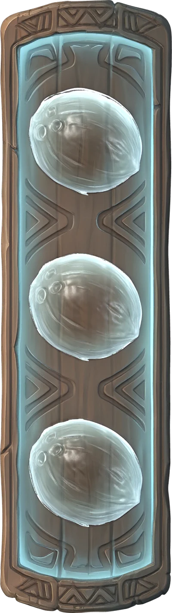

Surf
0
Loading the beach · 0%

Every one of these is a finger movement. The buttons down the left of the screen do the same thing, and carry the same picture, so one teaches the other.
Three that aren't surfboards, then five that are. Tap one.